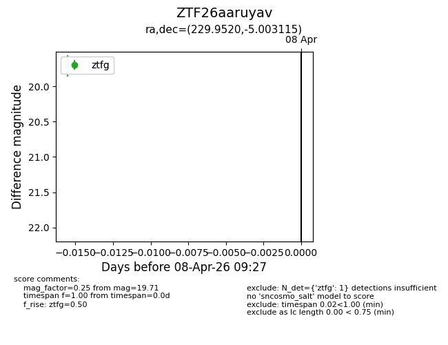
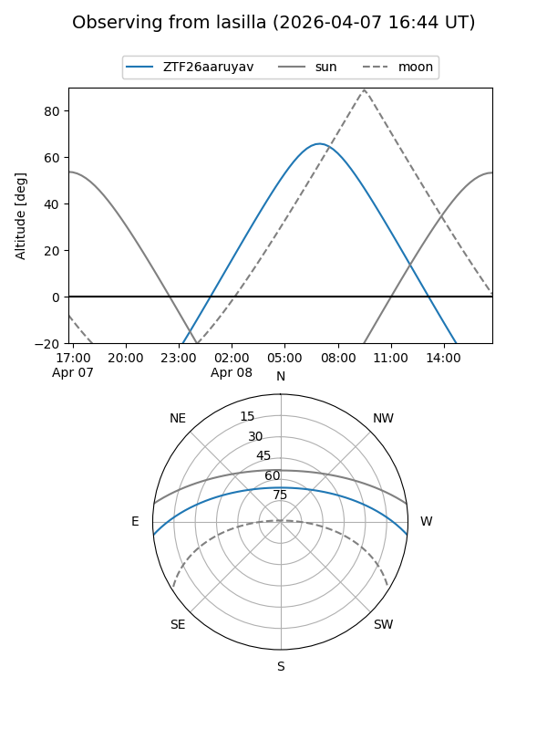
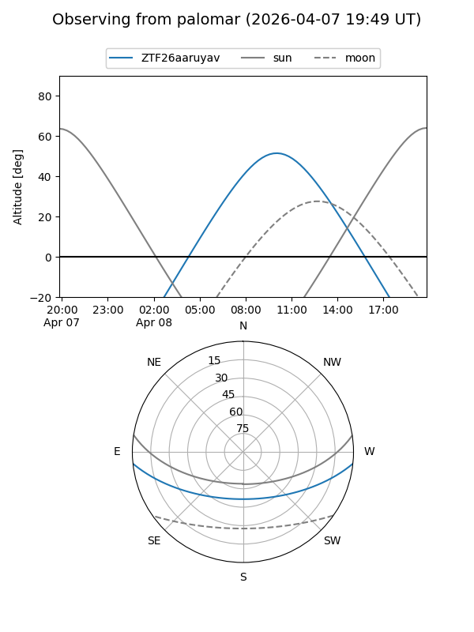

ZTF26aaruyav
Target ZTF26aaruyav at 2026-04-08 09:33
Aliases and brokers:
FINK: link
Lasair: link
ALeRCE: link
alt names
ZTF26aaruyav (ztf,fink_ztf)
Coordinates:
equatorial (ra, dec) = 229.9520,-5.00312
equatorial (HMS+DMS) = 15:19:48.49,-05:00:11.22
galactic (l, b) = (356.7178,+41.86970)
Flags:
Photometry:
last ztfg=19.71
1 ztfg detections
Lightcurve

Visibility


Additional plots